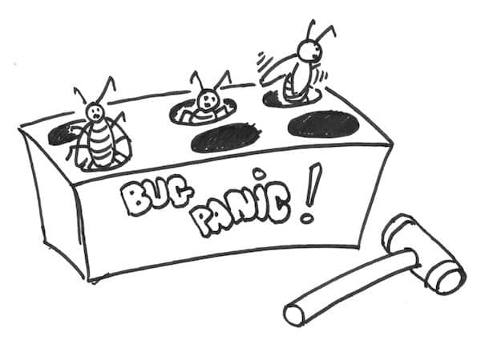

This is the second post of a series about the #ZeroBugs policy. In the previous post, I detailed what a #ZeroBugs policy is and how we tried to apply it. I encourage you start there.
Here is a quick summary of where we stood. We had tried to apply a #ZeroBugs policy with exploratory testing. We had discovered a lot of bugs, and we had agreed to tackle them little by little. We hoped to finish in a few months.

The final bug rules
At about the same time, we started an improvement kata to increase our productivity. I wrote in details about the full story, but to make it short, here is what we discovered :
- It would take us years, not months to fix all our bugs
- Our definition for bugs was part of the problem
After some experimentation, here is the bug definition we came up with :
- It corrupts data
- It returns wrong results
- It crashes with an unexpected error message
It stopped scope creep by removing the subjective “it used to work” rule. This rule also sped up bug fixing a lot. We closed many bugs with descriptive error messages.
Consequences
Within 2 sprints, we reached a #ZeroBugs state. Backlog ‘management’ was simpler as it did not contain bugs anymore. We were also spending less time fixing bugs and more building stories. Even as we resumed our intense exploratory testing sessions, our bug backlog did not grow.
After a while, we discovered other benefits to the #ZeroBugs policy.
Spending less time on bugs made our velocity more stable. Our product owner was happier to see us deliver new features more reliably. In the end, this improved our relationship with him.
💡 #ZeroBugs policy makes developers happier
It also made the team happier. First, because we had a lot less of stressful emergencies to answer to. Second, because programming new features is more interesting than fixing bugs.
It also made the other teams happier and more productive ! They encountered a lot less bugs when using our product. When they had problems, they usually got a clear error message. They would fix it on their side, or suggest us a new feature.
A #ZeroBugs policy and exploratory testing also have a side effect on technical debt ! Bugs tend to appear in the more brittle parts of the code. When fixing bugs, you took the opportunity to refactor technical debt at the same time.
💡 #ZeroBugs policy reduces technical debt
Finally, having a definition for bugs was very helpful. It allowed decentralized prioritization of bugs. The alternative to that is to have a domain expert available to sort bugs from stories. A decentralized rule prevents all sort of coordination and people issues. Our system was rather technical, which made it easy to define what a bug is. In other cases, it might be worth spending some time with the domain expert to define similar rules.
“Use decision rules to decentralize economic control.” From Principles of Product Development Flow by Donald G. Reinertsen
To summarize, sticking to #ZeroBugs is a win-win and sustainable situation for all.
Next week
This was part 2 of a series of posts about the #ZeroBugs policy. In next week’s post, I’ll provide a step by step guide about how to inject a #ZeroBugs policy in your team.